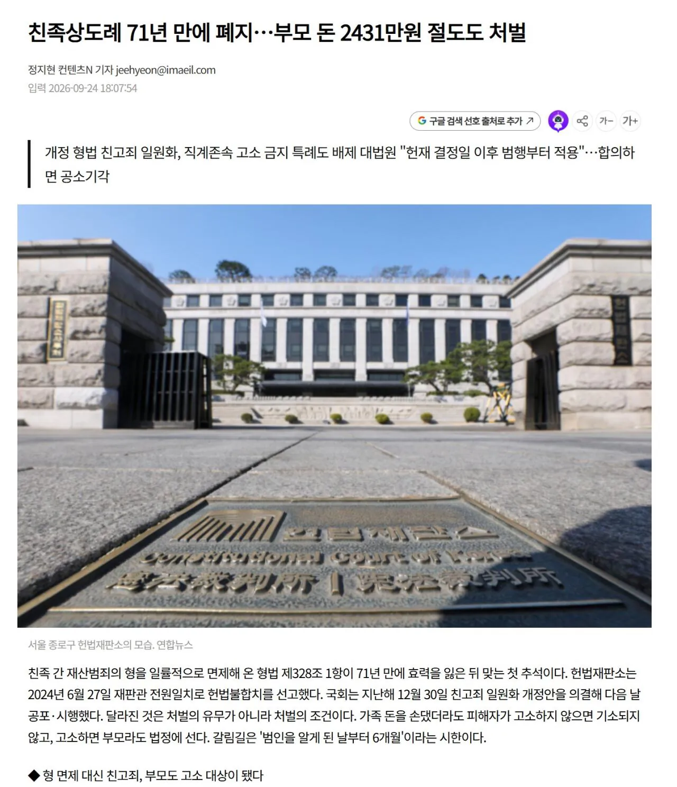

원래 친족끼리는 재산범죄는 성립하지 않았는데
시대에 안 맞는다면서 폐지함.
원래 가족끼리는 절도죄 자체가 성립하지 않았는데, 부모돈 2431만원 절도한 사례가 실무에서 적용되기도 함.
근데 정작 그 부모는 마음 약해져서 처벌불원서 써줘서 처벌 안받았다고 함.

원래 친족끼리는 재산범죄는 성립하지 않았는데
시대에 안 맞는다면서 폐지함.
원래 가족끼리는 절도죄 자체가 성립하지 않았는데, 부모돈 2431만원 절도한 사례가 실무에서 적용되기도 함.
근데 정작 그 부모는 마음 약해져서 처벌불원서 써줘서 처벌 안받았다고 함.
국세청: (씌익) 범죄수익 추징
범죄 수익은 몰수가 원칙임 ....
쌍방폭행, 사실적시 명예훼손, 정당방위의 범위... 등등 아직 부적절하고 손봐야될 다~ 아는것들도 많음
폐지 되긴해야함
생판 남으로 몇십년 살다가 가져가버리는 경우도 있을거같으니
다른 기본 벌금이나 올려라
인플레이션에 비해서 벌금 금액은 80년대수준
시대의 안맞는 법안은 ㅈㄴ많은데 언제 다바꾸나
바꿔도 그때가면 또 안맞겠지?
대고소 시대 빨리
유교영향컷
30만원도 아니고ㅋㅋ
근데 재벌아들이 1조 훔쳤다고하면 어케되는거임?